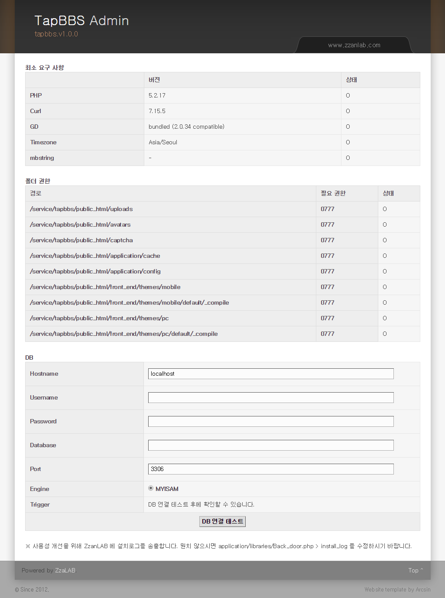
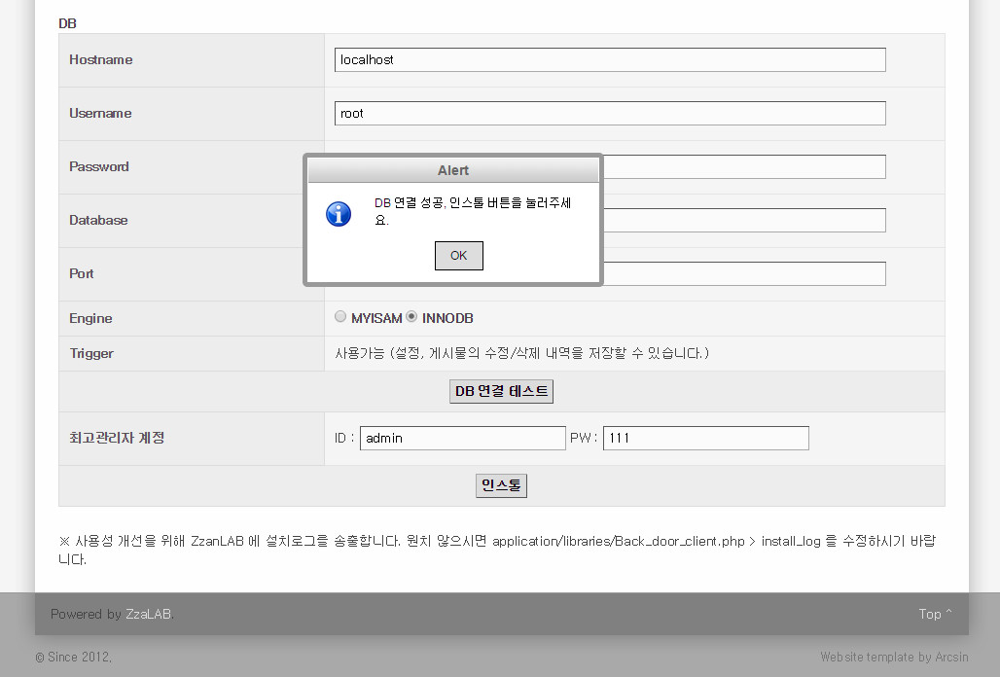

3분 게시판, 초간단 MOBILE && PC 게시판.
TapBBS - ZzanLAB
설치방법
- 죄송하지만, 본 메뉴얼은 가장 기본적인 환경 준비와 방법은 알고 계시다라는 전제로 작성되었습니다.
- MySQL Database 와 계정은 준비되어 있으시리라 믿습니다.
- 설치할 호스팅이나 서버환경, 혹은 로컬에 XAMPP 등의 환경도 준비되셨으리라 믿습니다.
- 최신 릴리즈본을 다운로드하십시오. (http://www.tapbbs.com/bbs/lists/download)
- 해당 파일을 압축해제하여 업로드하셔도 되고, 압축파일을 그대로 올려 서버에서 압축해제하셔도 됩니다.
- TapBBS는 서브폴더에 올리셔도 정상 동작하므로 상황에 맞게 업로드하시면 됩니다.
- http://설치URL/admin/install/tapbbs 로 설치화면에 접속합니다. 
- 만약, 설치URL은 명확한데 위와 같은 페이지로 진입하지 못하고 404 에러가 발생한다면 mod_rewrite 를 사용하지 못하는 환경일 수 있습니다. 이 때는 서버관리자나 호스팅업체에 문의가 필요합니다.
- 최소 요구 사항의 상태는 모두 "O" 이어야 합니다. (만약, 이를 해결할 수 없다면, 서버관리자나 호스팅업체에 문의가 필요합니다.)
- 폴더 권한의 폴더들의 상태는 모두 "O"으로 777의 권한을 가져야 합니다. (접속자가 파일을 읽기/쓰기/삭제가 가능해야하는 폴더들 입니다.)
- DB에 준비된 MySQL 정보를 입력하고 [DB 연결 테스트]를 누릅니다. 
- "Engine" 은 DB 연결 테스트 후에 innoDB 를 사용할 수 있다면 우측에 Radio 버튼이 추가됩니다.
- "Trigger" 는 DB 연결 테스트 후에 사용 가능 여부가 표출됩니다.
- 사용가능 (설정, 게시물의 수정/삭제 내역을 저장할 수 있습니다.) : MySQL 의 Trigger 사용 권한이 부여되어 있어서, TapBBS의 주요기능인 각종 설정 수정 내역, 게시물 수정/삭제 내역 등을 적재하고 확인할 수 있습니다.
- 사용불가 (설정, 게시물의 수정/삭제 내역을 저장할 수 없습니다.) : 아쉽지만, TapBBS의 주요기능인 각종 설정 수정 내역, 게시물 수정/삭제 내역 등을 적재하지 못합니다. 가능하시다면, 서버관리자나 호스팅업체에 문의하여 사용권한을 획득하시기 바랍니다. - DB 연결 테스트가 완료되셨다면, 최고관리자 계정 정보를 등록하고 아래 [인스톨]을 누르십시오.
- "Success Install" 라는 Alert 를 확인하시고, front_end 의 첫화면으로 이동되면 모든 설치과정이 완료되신 겁니다.